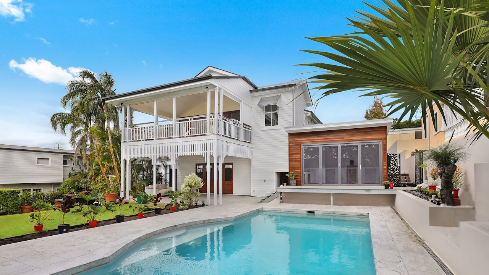

Une piscine déjà en eau se déclare par le propriétaire : habitation, responsabilité, parfois le local technique. L'entreprise qui la construit répond au titre de la décennale. Dire de quel côté vous êtes.

Propriétaire
- Bassin enterré ou hors sol
- Abri, pompe, local
- Responsabilité si un tiers se blesse
- Déclaration à l'habitation existante avant un second contrat
Constructeur
Creuser et étancher pour un client est un ouvrage. Le parcours est métiers du bâtiment, pas cette fiche habitation.
Questions frequentes
Mon assurance habitation suffit-elle ?
Souvent le bassin doit être déclaré. S'il ne l'est pas, un sinistre peut être discuté. On vérifie la clause avant d'ajouter un contrat.
La décennale du pisciniste me couvre-t-elle comme propriétaire ?
Elle couvre l'ouvrage qu'il a réalisé, dans son cadre. Votre responsabilité de gardien du bassin est un autre sujet.
Comment demander un devis assurance piscine ?
Le questionnaire est gratuit et sans engagement. Il sert à décrire l’activité réelle, pas à afficher un prix. Un courtier ORIAS reprend le dossier avant toute souscription.